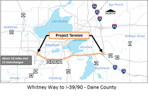

Belt Tightening
July 31, 2019
|

A counter-intuitive way to reduce congestion is to go on a road diet or, in this case, belt tightening.
On July 24, 2019 Wisconsin Department of Transportation officials held a well-publicized public involvement meeting about a plan called US 12/18 Madison Beltline Improvement Alternatives dealing with a ten mile stretch between Whitney Way and I- 39/90 (see graphic). The stretch is in need of repairs, a perfect time to consider modifications and upgrades to the current arrangement. The two alternatives presented were: 1) Resurfacing the median area with drainage improvements and replacing deteriorated sections of the existing barrier wall; or 2) Performing #1 with slight modification to enable the use of the inner median as an additional traffic lane during peak commute times, a practice referred to as "dynamic part-time shoulder use" (DPTSU).
Neither alternative seemed particularly attractive, while a
more academic policy analysis would also include the option of doing nothing
(letting deterioration continue). Nor was a fourth option that would involve real
improvement entertained, that of restricting some lanes to High-Occupancy
Vehicles (HOVs; vehicles with more than one person) or rapid transit; or modifying the right of way to provide spaces for safe
bicycle and pedestrian travel. In other words, the option of Belt Tightening
was not considered but should have been.
Let us hope that the "Tightening" option is seriously considered by the
parent project of the part-time shoulder proposal called Madison Beltline Study begun in 2012. In general, WisDOT needs to develop more projects focused on improving public transit, bicycling and walking; and fewer projects focused on highway expansion. It needs a much more balanced approach to transportation that acknowledges how
expensive cars and trucks are to own and operate and makes them as unnecessary as possible.
The short-term benefit of Dynamic Part Time Shoulder Use
seems clear. It would initially relieve commute-hour congestion by making an
additional lane temporarily available for over-flow traffic. It would do so by
reconfiguring existing land rather than using new land, and it could be
implemented fairly quickly. Estimates are that it could be operational in less
than 18 months.
The main problem is that it is only a short-term solution (maybe lasting 5-10 years) but would spend resources that would no longer be available for a better solution. In the long term, congestion would build back to its current level but would do so using additional space. The number of Vehicle Miles Traveled (VMT) and emissions from that travel also would have increased
while drivers would face the same amount of congestion as initially. And to make this a vicious cycle, there would probably be calls then to make full-time what had initially been only part-time, again as a short-sighted solution to congestion.
Such a situation would hardly be compatible with the project's claim of being 'sustainable,' since 'sustainable' is commonly thought to mean that something can be maintained over time at the same rate or level.
The project website claims that DPTSU is being used in 17 states. That use is
fairly recent so there is no long-term evaluation of the practice in the United
States. But part-time shoulder use had been used in such European countries as
the Netherlands and Belgium long enough that evidence has accumulated about its
long-tern effect. We now know that many routes started with Dynamic/"Flex" lane
arrangements eventually ended up needing expansion to incorporate additional permanent lanes, often within 5-10
years of the installation of dynamic shoulder lanes.
Economists call this "induced
demand," a main element of supply and demand theory. The general idea is
that there is an unobserved amount of demand for a good called "latent
demand." There is also an unobserved potential supply of that good called
"latent supply." The actual observed amount of the good or its
"price" is where latent supply meets latent demand. If one or another
of those latent amounts is changed (in this case supply), that change will
produce a new equilibrium point. Consumers are perhaps most aware of this
concept when a good they want goes on "sale." The sale is often a way
for retailers to reduce inventory by "inducing" extra demand for an in-stock
item.
If we apply this logic to the traffic world, then what we call Beltline "congestion" is the "price" we
are willing to pay to use the road. If we deem the price too high, we avoid the
congestion by reducing our demand through changed travel habits, changed
housing location and/or changed employment. If we grumble but put up with it,
then it is not too high. If the supply of lane space is increased, the price
(intersection of latent demand and latent supply) is lowered and our behavior
influenced accordingly. Until we again experience the level of congestion that
we accept overall even if we grumble about it. This is nicely explained in an
article that came out last September by Benjamin Schneider of CityLab called "Induced Demand."
The more lasting solution to traffic congestion is therefore not to temporarily reduce the cost of driving by increasing supply adding more lanes to the Beltline part-time but to instead increase the cost of driving so people search for alternatives. Restricting lane use alters the relative cost of hauling freight by truck vs. rail, the relative
cost of using Single vs. High Occupancy Vehicles (HOVs), the relative cost of riding rapid transit instead of ones own car, the relative cost of using land for protected bicycle lanes and foot paths vs. cars etc.
An intermediary solution could be to use Dynamic Part Time Shoulder Use, but to restrict
that use to mass transit. In some places, for example the suburban Chicago I-90 corridor, "flex lanes" have been
designed in such a way that even when closed to regular traffic, they can
provide an express lane for mass transit. Various
forms of shoulder-riding bus arrangements have also been used to great success
in the Minneapolis/St. Paul region, and
there is now talk of using it for Freeway Flyers transporting people between
Ozaukee County and Milwaukee. Discussions of adding a Bus Rapid Transit system
(BRT) to the Madison Area sometimes mention shoulder use as well. If that BRT
bus sailed on past cars moving slowly in regular traffic lanes, that image
alone might sell people on the benefit of having a regional
public transit system.
|